第 9 章 数据可视化
David Robinson 给出为何使用 ggplot227 当然也有 Jeff Leek 指出在某些重要场合不适合 ggplot228 并且给出强有力的 证据，其实不管怎么样，适合自己的才是好的。也不枉费 Garrick Aden-Buie 花费 160 页幻灯片逐步分解介绍 优雅的ggplot2，Malcolm Barrett 也介绍了 ggplot2 基础用法，还有 Selva Prabhakaran 精心总结给出了 50 个 ggplot2 数据可视化的 例子 以及 Victor Perrier 为小白用 ggplot2 操碎了心地开发 RStudio 插件 esquisse 包，Claus O. Wilke 教你一步步创建出版级的图形 https://github.com/clauswilke/practical_ggplot2。
GGplot2 是十分方便的统计作图工具，相比 Base R，为了一张出版级的图形，不需要去调整每个参数，实现快速出图。集成了很多其它统计计算的 R 包，支持丰富的统计分析和计算功能，如回归、平滑等，实现了作图和模型的无缝连接。比如图9.1，使用 loess 局部多项式平滑得到数据的趋势，不仅仅是散点图，代码量也非常少。
ggplot(mpg, aes(displ, hwy)) +
geom_point(aes(color = class)) +
geom_smooth(se = TRUE, method = "loess") +
labs(
title = "Fuel efficiency generally decreases with engine size",
subtitle = "Two seaters (sports cars) are an exception because of their light weight",
caption = "Data from fueleconomy.gov"
)
图 9.1: 简洁美观
故事源于一幅图片，我不记得第一次见到这幅图是什么时候了，只因多次在多个场合中见过，所以留下了深刻的印象，后来才知道它出自于一篇博文 — Using R packages and education to scale Data Science at Airbnb，作者 Ricardo Bion 还在其 Github 上传了相关代码29。除此之外还有几篇重要的参考资料：
- Pablo Barberá 的 Data Visualization with R and ggplot2
- Kieran Healy 的新书 Data Visualization: A Practical Introduction
- Matt Leonawicz 的新作 mapmate, 可以去其主页欣赏系列作品30
- tidytuesday 可视化挑战官方项目 还有 tidytuesday
- ggstatsplot 可视化统计检验、模型的结果
- ggpubr 制作出版级统计图形
9.1 基础语法
以数据集 airquality 为例介绍GGplot2 图层、主题、配色、坐标、尺度、注释和组合等
9.1.1 图层
ls("package:ggplot2", pattern = "^geom_")
#> [1] "geom_abline" "geom_area" "geom_bar"
#> [4] "geom_bin2d" "geom_blank" "geom_boxplot"
#> [7] "geom_col" "geom_contour" "geom_count"
#> [10] "geom_crossbar" "geom_curve" "geom_density"
#> [13] "geom_density_2d" "geom_density2d" "geom_dotplot"
#> [16] "geom_errorbar" "geom_errorbarh" "geom_freqpoly"
#> [19] "geom_hex" "geom_histogram" "geom_hline"
#> [22] "geom_jitter" "geom_label" "geom_line"
#> [25] "geom_linerange" "geom_map" "geom_path"
#> [28] "geom_point" "geom_pointrange" "geom_polygon"
#> [31] "geom_qq" "geom_qq_line" "geom_quantile"
#> [34] "geom_raster" "geom_rect" "geom_ribbon"
#> [37] "geom_rug" "geom_segment" "geom_sf"
#> [40] "geom_sf_label" "geom_sf_text" "geom_smooth"
#> [43] "geom_spoke" "geom_step" "geom_text"
#> [46] "geom_tile" "geom_violin" "geom_vline"生成一个散点图
ggplot(airquality, aes(x = Temp, y = Ozone)) + geom_point()
#> Warning: Removed 37 rows containing missing values (geom_point).
9.1.2 主题
ls("package:ggplot2", pattern = "^theme_")
#> [1] "theme_bw" "theme_classic" "theme_dark" "theme_get"
#> [5] "theme_gray" "theme_grey" "theme_light" "theme_linedraw"
#> [9] "theme_minimal" "theme_replace" "theme_set" "theme_test"
#> [13] "theme_update" "theme_void"这里只展示 theme_bw() theme_void() theme_minimal() 和 theme_void() 等四个常见主题，更多主题参考 ggsci、ggthemes 、hrbrthemes 和 ggthemr 包
ggplot(airquality, aes(x = Temp, y = Ozone)) + geom_point() + theme_bw()
#> Warning: Removed 37 rows containing missing values (geom_point).
ggplot(airquality, aes(x = Temp, y = Ozone)) + geom_point() + theme_void()
#> Warning: Removed 37 rows containing missing values (geom_point).
ggplot(airquality, aes(x = Temp, y = Ozone)) + geom_point() + theme_minimal()
#> Warning: Removed 37 rows containing missing values (geom_point).
ggplot(airquality, aes(x = Temp, y = Ozone)) + geom_point() + theme_void()
#> Warning: Removed 37 rows containing missing values (geom_point).


9.1.3 配色
ls("package:ggplot2", pattern = "^scale_(color|fill)_")
#> [1] "scale_color_brewer" "scale_color_continuous"
#> [3] "scale_color_discrete" "scale_color_distiller"
#> [5] "scale_color_gradient" "scale_color_gradient2"
#> [7] "scale_color_gradientn" "scale_color_grey"
#> [9] "scale_color_hue" "scale_color_identity"
#> [11] "scale_color_manual" "scale_color_viridis_c"
#> [13] "scale_color_viridis_d" "scale_fill_brewer"
#> [15] "scale_fill_continuous" "scale_fill_date"
#> [17] "scale_fill_datetime" "scale_fill_discrete"
#> [19] "scale_fill_distiller" "scale_fill_gradient"
#> [21] "scale_fill_gradient2" "scale_fill_gradientn"
#> [23] "scale_fill_grey" "scale_fill_hue"
#> [25] "scale_fill_identity" "scale_fill_manual"
#> [27] "scale_fill_ordinal" "scale_fill_viridis_c"
#> [29] "scale_fill_viridis_d"ggplot(airquality, aes(x = Temp, y = Ozone, color = as.factor(Month))) +
geom_point(na.rm = TRUE)
ggplot(airquality, aes(x = Temp, y = Ozone, color = as.ordered(Month))) +
geom_point(na.rm = TRUE)

9.1.4 刻度
ls("package:ggplot2", pattern = "^scale_(x|y)_")
#> [1] "scale_x_continuous" "scale_x_date" "scale_x_datetime"
#> [4] "scale_x_discrete" "scale_x_log10" "scale_x_reverse"
#> [7] "scale_x_sqrt" "scale_x_time" "scale_y_continuous"
#> [10] "scale_y_date" "scale_y_datetime" "scale_y_discrete"
#> [13] "scale_y_log10" "scale_y_reverse" "scale_y_sqrt"
#> [16] "scale_y_time"range(airquality$Temp, na.rm = TRUE)
#> [1] 56 97
range(airquality$Ozone, na.rm = TRUE)
#> [1] 1 168
ggplot(airquality, aes(x = Temp, y = Ozone)) +
geom_point(na.rm = TRUE) +
scale_x_continuous(breaks = seq(50, 100, 5)) +
scale_y_continuous(breaks = seq(0, 200, 20))
9.1.5 注释
ls("package:ggplot2", pattern = "^annotation_")
#> [1] "annotation_custom" "annotation_logticks" "annotation_map"
#> [4] "annotation_raster"
ggplot(airquality, aes(x = Temp, y = Ozone)) +
geom_point(na.rm = TRUE) +
labs(title = substitute(paste(d *
bolditalic(x)[italic(t)] == alpha * (theta - bolditalic(x)[italic(t)]) *
d * italic(t) + lambda * d * italic(B)[italic(t)]), list(lambda = 4)))
9.1.6 图例
二维的图例 biscale 和 multiscales 和 ggnewscale
9.1.7 组合
ggplot(airquality) +
geom_point(aes(x = Temp, y = Ozone), na.rm = TRUE) +
facet_wrap(~ as.ordered(Month))
ggplot(airquality) +
geom_point(aes(x = Temp, y = Ozone), na.rm = TRUE) +
facet_wrap(~ as.ordered(Month), nrow = 1)

cowplot 是以作者 Claus O. Wilke 命名的，用来组合 ggplot 对象画图，类似的组合图形的功能包还有 baptiste auguié 开发的 gridExtra 和 egg， Thomas Lin Pedersen 开发的 patchwork
Dean Attali 开发的 ggExtra 可以在图的边界添加密度估计曲线，直方图等
9.1.8 坐标系
极坐标，直角坐标
9.1.9 坐标轴
坐标轴标签位置、大小、字体
9.2 统计图形
9.2.1 散点图
下面以 diamonds 数据集为例展示 ggplot2 的绘图过程，首先加载 diamonds 数据集，查看数据集的内容
data(diamonds)
str(diamonds)
#> Classes 'tbl_df', 'tbl' and 'data.frame': 53940 obs. of 10 variables:
#> $ carat : num 0.23 0.21 0.23 0.29 0.31 0.24 0.24 0.26 0.22 0.23 ...
#> $ cut : Ord.factor w/ 5 levels "Fair"<"Good"<..: 5 4 2 4 2 3 3 3 1 3 ..
#> $ color : Ord.factor w/ 7 levels "D"<"E"<"F"<"G"<..: 2 2 2 6 7 7 6 5 2 ..
#> $ clarity: Ord.factor w/ 8 levels "I1"<"SI2"<"SI1"<..: 2 3 5 4 2 6 7 3 4..
#> $ depth : num 61.5 59.8 56.9 62.4 63.3 62.8 62.3 61.9 65.1 59.4 ...
#> $ table : num 55 61 65 58 58 57 57 55 61 61 ...
#> $ price : int 326 326 327 334 335 336 336 337 337 338 ...
#> $ x : num 3.95 3.89 4.05 4.2 4.34 3.94 3.95 4.07 3.87 4 ...
#> $ y : num 3.98 3.84 4.07 4.23 4.35 3.96 3.98 4.11 3.78 4.05 ...
#> $ z : num 2.43 2.31 2.31 2.63 2.75 2.48 2.47 2.53 2.49 2.39 ...数值型变量 carat 作为 x 轴
ggplot(diamonds, aes(x = carat))
ggplot(diamonds, aes(x = carat, y = price))
ggplot(diamonds, aes(x = carat, color = cut))
ggplot(diamonds, aes(x = carat), color = "steelblue") 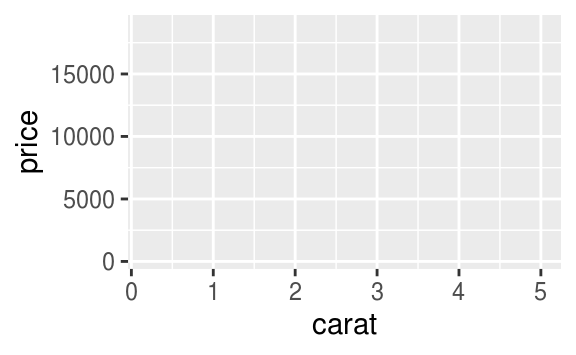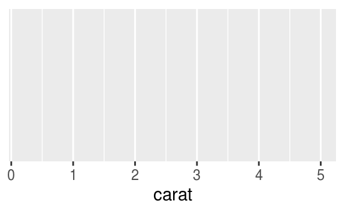
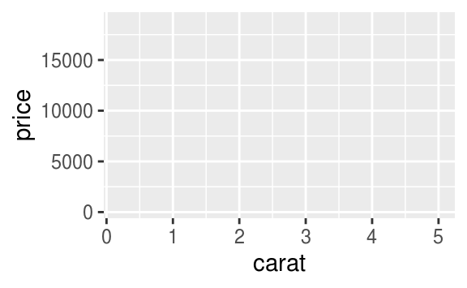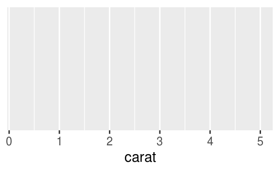
图 9.2: 绘图过程
图 9.2 的基础上添加数据图层
sub_diamonds <- diamonds[sample(1:nrow(diamonds), 1000), ]
ggplot(sub_diamonds, aes(x = carat, y = price)) +
geom_point()
图 9.3: 添加数据图层
给散点图9.3上色
图 9.4: 散点图配色
ggplot(sub_diamonds, aes(x = carat, y = price)) +
geom_point(color = "steelblue") +
scale_y_continuous(
labels = scales::unit_format(unit = "k", scale = 1e-3),
breaks = seq(0, 20000, 4000)
)
图 9.5: 格式化坐标轴刻度标签
让另一变量 cut 作为颜色分类指标

图 9.6: 分类散点图
当然还有一种类似的表示就是分组，默认情况下，ggplot2将所有观测点视为一组，以分类变量 cut 来分组

图 9.7: 分组
在图9.7 上没有体现出来分组的意思，下面以 cut 分组线性回归为例
ggplot(sub_diamonds, aes(x = carat, y = price)) +
geom_point() +
geom_smooth(method = "lm")
ggplot(sub_diamonds, aes(x = carat, y = price, group = cut)) +
geom_point() +
geom_smooth(method = "lm")

图 9.8: 分组线性回归
我们当然可以选择更加合适的拟合方式，如局部多项式平滑 loess 但是该方法不太适用观测值比较多的情况，因为它会占用比较多的内存，建议使用广义可加模型作平滑拟合
ggplot(sub_diamonds, aes(x = carat, y = price, group = cut)) +
geom_point() +
geom_smooth(method = "loess")
图 9.9: 局部多项式平滑
ggplot(sub_diamonds, aes(x = carat, y = price, group = cut)) +
geom_point() +
geom_smooth(method = "gam", formula = y ~ s(x, bs = "cs"))
图 9.10: 数据分组应用广义可加平滑
为了更好地区分开组别，我们在图9.10的基础上分面或者配色
ggplot(sub_diamonds, aes(x = carat, y = price, group = cut)) +
geom_point() +
geom_smooth(method = "gam", formula = y ~ s(x, bs = "cs")) +
facet_grid(~cut)
ggplot(sub_diamonds, aes(x = carat, y = price, group = cut, color = cut)) +
geom_point() +
geom_smooth(method = "gam", formula = y ~ s(x, bs = "cs")) 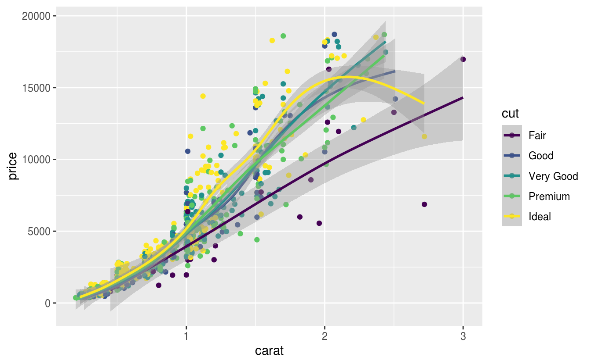
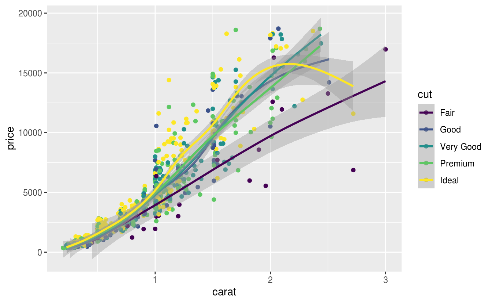
图 9.11: 分组配色
在分类散点图的另一种表示方法就是分面图，以 cut 变量作为分面的依据
图 9.12: 分面散点图
给图 9.12 上色
ggplot(sub_diamonds, aes(x = carat, y = price)) +
geom_point(color = "steelblue") +
facet_grid(~cut)
图 9.13: 给分面散点图上色
在图9.13的基础上，给不同的类上不同的颜色
图 9.14: 给不同的类上不同的颜色
去掉图例，此时图例属于冗余信息了
ggplot(sub_diamonds, aes(x = carat, y = price, color = cut)) +
geom_point(show.legend = FALSE) +
facet_grid(~cut)
图 9.15: 去掉图例
四块土地，所施肥料不同，肥力大小顺序 4 < 2 < 3 < 1 小麦产量随肥力的变化
data(Wheat2, package = "nlme") # Wheat Yield Trials
library(colorspace)
ggplot(Wheat2, aes(longitude, latitude)) +
geom_point(aes(size = yield, colour = Block)) +
scale_color_discrete_sequential(palette = "Viridis") +
scale_x_continuous(breaks = seq(0, 30, 5)) +
scale_y_continuous(breaks = seq(0, 50, 10))
图 9.16: 多个图例

图 9.17: 分类散点图
图层、分组、分面和散点图介绍完了，接下来就是其它统计图形，如箱线图，小提琴图和条形图
dat <- as.data.frame(cbind(rep(1948 + seq(12), each = 12), rep(seq(12), 12), AirPassengers))
colnames(dat) <- c("year", "month", "passengers")
ggplot(data = dat, aes(x = as.factor(year), y = as.factor(month))) +
stat_sum(aes(size = passengers), colour = "lightblue") +
scale_size(range = c(1, 10), breaks = seq(100, 650, 50)) +
labs(x = "Year", y = "Month", colour = "Passengers") +
theme_minimal()
图 8.14: 1948年至1960年航班乘客人数变化
9.2.2 箱线图
以 PlantGrowth 数据集为例展示箱线图，在两组不同实验条件下，植物生长的情况，纵坐标是干燥植物的量，横坐标表示不同的实验条件。这是非常典型的适合用箱线图来表达数据的场合，Y 轴对应数值型变量，X 轴对应分类变量，在 R 语言中，分类变量的类型是 factor
data("PlantGrowth")
str(PlantGrowth)
#> 'data.frame': 30 obs. of 2 variables:
#> $ weight: num 4.17 5.58 5.18 6.11 4.5 4.61 5.17 4.53 5.33 5.14 ...
#> $ group : Factor w/ 3 levels "ctrl","trt1",..: 1 1 1 1 1 1 1 1 1 1 ...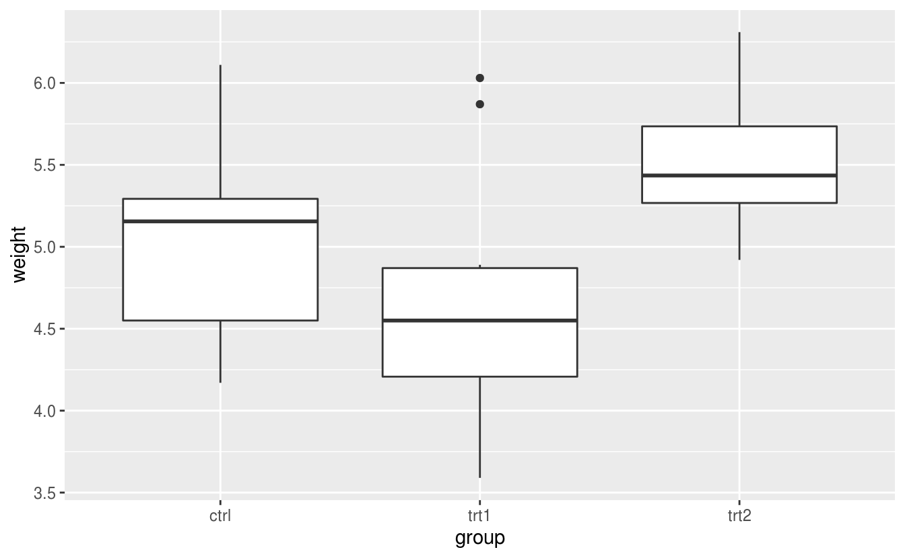
PlantGrowth 数据量比较小，此时比较适合采用抖动散点图，抖动是为了避免点之间相互重叠，为了增加不同类别之间的识别性，我们可以用不同的点的形状或者不同的颜色来表示类别
ggplot(data = PlantGrowth, aes(x = group, y = weight, shape = group)) + geom_jitter()
ggplot(data = PlantGrowth, aes(x = group, y = weight, color = group)) + geom_jitter()

boxplot(weight ~ group,
data = PlantGrowth,
ylab = "Dried weight of plants", col = "lightgray",
notch = FALSE, varwidth = TRUE
)
以钻石切割质量 cut 为分面依据，以钻石颜色类别 color 为 x 轴，钻石价格为 y 轴，绘制箱线图9.18
ggplot(diamonds, aes(x = color, y = price, color = cut)) +
geom_boxplot(show.legend = FALSE) +
facet_grid(~cut)
图 9.18: 箱线图
我们当然还可以添加钻石的纯净度 clarity 作为分面依据，那么箱线图可以为图 9.19
ggplot(diamonds, aes(x = color, y = price, color = cut)) +
geom_boxplot(show.legend = FALSE) +
facet_grid(clarity ~ cut)
图 9.19: 复合分面箱线图
经过观察，我们发现水平分类过多，考虑用切割质量 cut 替换钻石颜色 color 绘图，但是由于分类过细，图信息展示不简练，反而不好，如图 9.20
ggplot(diamonds, aes(x = cut, y = price, color = cut)) +
geom_boxplot(show.legend = FALSE) +
facet_grid(clarity ~ color)
ggplot(diamonds, aes(x = cut, y = price, color = color)) +
geom_boxplot(show.legend = FALSE) +
facet_grid(clarity ~ color)
图 9.20: 钻石颜色配色
9.2.3 条形图
条形图特别适合分类变量的展示，我们这里展示钻石切割质量 cut 不同等级的数量，当然我们可以直接展示各类的数目，在图层 geom_bar 中指定 stat="identity"
# 需要映射数据框的两个变量，相当于自己先计算了每类的数量
with(diamonds, table(cut))
#> cut
#> Fair Good Very Good Premium Ideal
#> 1610 4906 12082 13791 21551
cut_df <- as.data.frame(table(diamonds$cut))
ggplot(cut_df, aes(x = Var1, y = Freq)) + geom_bar(stat = "identity")

图 9.21: 频数条形图
还有另外三种表示方法
ggplot(diamonds, aes(x = cut)) + geom_bar(stat = "count")
ggplot(diamonds, aes(x = cut, y = ..count..)) + geom_bar()
ggplot(diamonds, aes(x = cut, y = stat(count))) + geom_bar()


我们还可以在图 9.21 的基础上再添加一个分类变量钻石的纯净度 clarity，形成堆积条形图

图 9.22: 堆积条形图
再添加一个分类变量钻石颜色 color 比较好的做法是分面
图 9.23: 分面堆积条形图
实际上，绘制图9.23包含了对分类变量的分组计数过程，如下
with(diamonds, table(cut, color))
#> color
#> cut D E F G H I J
#> Fair 163 224 312 314 303 175 119
#> Good 662 933 909 871 702 522 307
#> Very Good 1513 2400 2164 2299 1824 1204 678
#> Premium 1603 2337 2331 2924 2360 1428 808
#> Ideal 2834 3903 3826 4884 3115 2093 896还有一种堆积的方法是按比例，而不是按数量，如图9.24
图 9.24: 比例堆积条形图
接下来就是复合条形图

图 9.25: 复合条形图
再添加一个分类变量，就是需要分面大法了，图 9.25 展示了三个分类变量，其实我们还可以再添加一个分类变量用作分面的列依据
ggplot(diamonds, aes(x = color, fill = clarity)) +
geom_bar(position = "dodge") +
facet_grid(rows = vars(cut))
图 9.26: 分面复合条形图
图 9.26 展示的数据如下
with(diamonds, table(color, clarity, cut))
#> , , cut = Fair
#>
#> clarity
#> color I1 SI2 SI1 VS2 VS1 VVS2 VVS1 IF
#> D 4 56 58 25 5 9 3 3
#> E 9 78 65 42 14 13 3 0
#> F 35 89 83 53 33 10 5 4
#> G 53 80 69 45 45 17 3 2
#> H 52 91 75 41 32 11 1 0
#> I 34 45 30 32 25 8 1 0
#> J 23 27 28 23 16 1 1 0
#>
#> , , cut = Good
#>
#> clarity
#> color I1 SI2 SI1 VS2 VS1 VVS2 VVS1 IF
#> D 8 223 237 104 43 25 13 9
#> E 23 202 355 160 89 52 43 9
#> F 19 201 273 184 132 50 35 15
#> G 19 163 207 192 152 75 41 22
#> H 14 158 235 138 77 45 31 4
#> I 9 81 165 110 103 26 22 6
#> J 4 53 88 90 52 13 1 6
#>
#> , , cut = Very Good
#>
#> clarity
#> color I1 SI2 SI1 VS2 VS1 VVS2 VVS1 IF
#> D 5 314 494 309 175 141 52 23
#> E 22 445 626 503 293 298 170 43
#> F 13 343 559 466 293 249 174 67
#> G 16 327 474 479 432 302 190 79
#> H 12 343 547 376 257 145 115 29
#> I 8 200 358 274 205 71 69 19
#> J 8 128 182 184 120 29 19 8
#>
#> , , cut = Premium
#>
#> clarity
#> color I1 SI2 SI1 VS2 VS1 VVS2 VVS1 IF
#> D 12 421 556 339 131 94 40 10
#> E 30 519 614 629 292 121 105 27
#> F 34 523 608 619 290 146 80 31
#> G 46 492 566 721 566 275 171 87
#> H 46 521 655 532 336 118 112 40
#> I 24 312 367 315 221 82 84 23
#> J 13 161 209 202 153 34 24 12
#>
#> , , cut = Ideal
#>
#> clarity
#> color I1 SI2 SI1 VS2 VS1 VVS2 VVS1 IF
#> D 13 356 738 920 351 284 144 28
#> E 18 469 766 1136 593 507 335 79
#> F 42 453 608 879 616 520 440 268
#> G 16 486 660 910 953 774 594 491
#> H 38 450 763 556 467 289 326 226
#> I 17 274 504 438 408 178 179 95
#> J 2 110 243 232 201 54 29 25
9.2.5 直方图
直方图用来查看连续变量的分布

图 8.24: 钻石价格的分布
堆积直方图

图 9.27: 钻石价格随切割质量的分布
基础 R 包与 Ggplot2 包绘制的直方图的对比，Base R 绘图速度快，代码更加稳定，Ggplot2 代码简洁，更美观
par(mar = c(2.1, 2.1, 1.5, 0.5))
plot(c(50, 350), c(0, 10),
type = "n", font.main = 1,
xlab = "", ylab = "", frame.plot = FALSE, axes = FALSE,
# xlab = "hp", ylab = "Frequency",
main = paste("Histogram with Base R", paste(rep(" ", 60), collapse = ""))
)
axis(
side = 1, at = seq(50, 350, 50), labels = seq(50, 350, 50),
tick = FALSE, las = 1, padj = 0, mgp = c(3, 0.1, 0)
)
axis(
side = 2, at = seq(0, 10, 2), labels = seq(0, 10, 2),
# col = "white", 坐标轴的颜色
# col.ticks 刻度线的颜色
tick = FALSE, # 取消刻度线
las = 1, # 水平方向
hadj = 1, # 右侧对齐
mgp = c(3, 0.1, 0) # 纵轴边距线设置为 0.1
)
abline(h = seq(0, 10, 2), v = seq(50, 350, 50), col = "gray90", lty = "solid")
abline(h = seq(1, 9, 2), v = seq(75, 325, 50), col = "gray95", lty = "solid")
hist(mtcars$hp,
col = "#56B4E9", border = "white",
freq = TRUE, add = TRUE
# labels = TRUE, axes = TRUE, ylim = c(0, 10.5),
# xlab = "hp",main = "Histogram with Base R"
)
mtext("hp", 1, line = 1.0)
mtext("Frequency", 2, line = 1.0)
ggplot(mtcars) +
geom_histogram(aes(x = hp), fill = "#56B4E9", color = "white", breaks = seq(50, 350, 50)) +
scale_x_continuous(breaks = seq(50, 350, 50)) +
scale_y_continuous(breaks = seq(0, 12, 2)) +
labs(x = "hp", y = "Frequency", title = "Histogram with Ggplot2") +
theme_minimal(base_size = 12)

图 8.25: 直方图
9.2.6 提琴图
提琴图
ggplot(diamonds, aes(x = cut, y = price)) + geom_boxplot()
ggplot(diamonds, aes(x = cut, y = price)) + geom_violin()

图 9.28: 小提琴图
ggplot(mpg, aes(class, cty)) +
geom_violin() +
labs(
title = "Violin plot",
subtitle = "City Mileage vs Class of vehicle",
caption = "Source: mpg",
x = "Class of Vehicle",
y = "City Mileage"
)图 9.29: 城市里程与车辆类别
蜂群图 ggbeeswarm 是分类散点图加箱线图的合体

9.2.7 抖动图
抖动图适合数据量比较小的情况
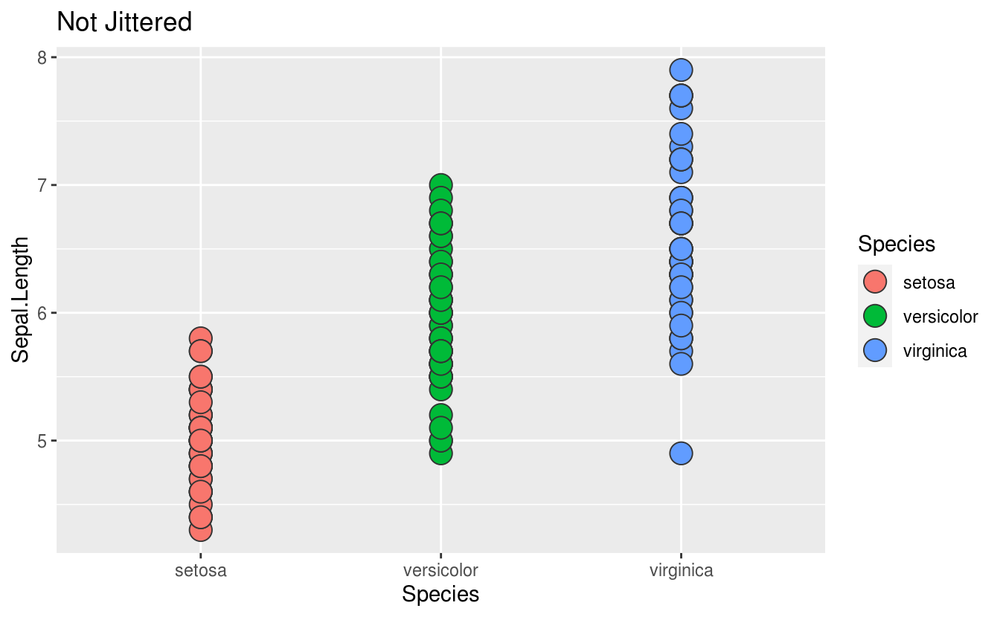
抖不抖，还是抖一下
ggplot(iris, aes(x = Species, y = Sepal.Length)) +
geom_point(aes(fill = Species), size = 5, shape = 21, colour = "grey20") +
# geom_boxplot(outlier.colour = NA, fill = NA, colour = "grey20") +
labs(title = "Not Jittered")
ggplot(iris, aes(x = Species, y = Sepal.Length)) +
geom_point(aes(fill = Species),
size = 5, shape = 21, colour = "grey20",
position = position_jitter(width = 0.2, height = 0.1)
) +
# geom_boxplot(outlier.colour = NA, fill = NA, colour = "grey20") +
labs(title = "Jittered")

在数据量比较大的时候，可以用箱线图、密度图、提琴图

图 9.30: 抖动图的反例
上色和分面都不好使的抖动图，因为区分度变小
ggplot(sub_diamonds, aes(x = color, y = price, color = color)) +
geom_jitter() +
facet_grid(clarity ~ cut)图 8.26: 根据钻石颜色上色
箱线图此时不宜分的过细
ggplot(diamonds, aes(x = color, y = price, color = color)) +
geom_boxplot() +
facet_grid(cut ~ clarity)
图 9.31: 箱线图
所以这样更好，先按纯净度分面，再对比不同的颜色，钻石价格的差异
图 9.32: 钻石按纯净度分面
最好只比较一个维度，不同颜色钻石的价格对比

图 9.33: 不同颜色钻石的价格比较
9.2.8 密度图
ggplot(mpg, aes(cty)) +
geom_density(aes(fill = factor(cyl)), alpha = 0.8) +
labs(
title = "Density plot",
subtitle = "City Mileage Grouped by Number of cylinders",
caption = "Source: mpg",
x = "City Mileage",
fill = "# Cylinders"
)图 9.34: 按汽缸数分组的城市里程
添加透明度，解决遮挡
ggplot(diamonds, aes(x = price, fill = cut)) + geom_density()
ggplot(diamonds, aes(x = price, fill = cut)) + geom_density(alpha = 0.5)

图 9.35: 添加透明度的密度图
堆积密度图

图 9.36: 堆积密度图
条件密度估计
# You can use position="fill" to produce a conditional density estimate
ggplot(diamonds, aes(carat, stat(count), fill = cut)) +
geom_density(position = "fill")
图 8.27: 条件密度估计图
岭线图是密度图的一种变体，可以防止密度曲线重叠在一起
ggplot(diamonds) +
ggridges::geom_density_ridges(aes(x = price, y = color, fill = color))
#> Picking joint bandwidth of 535
二维的密度图又是一种延伸

stat 函数，特别是 nlevel 参数，在密度曲线之间填充我们又可以得到热力图
ggplot(diamonds, aes(x = carat, y = price)) +
stat_density_2d(aes(fill = stat(nlevel)), geom = "polygon") +
facet_grid(. ~ cut)
gemo_hex 也是二维密度图的一种变体，特别适合数据量比较大的情形
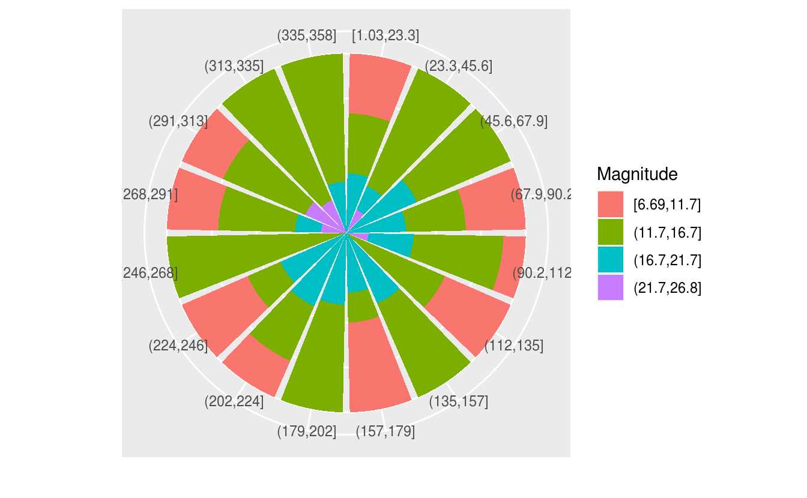
9.2.9 玫瑰图
南丁格尔风玫瑰图31 可以作为堆积条形图，分组条形图
ggplot(diamonds, aes(x = color, fill = clarity)) +
geom_bar()
ggplot(diamonds, aes(x = color, fill = clarity)) +
geom_bar() +
coord_polar() 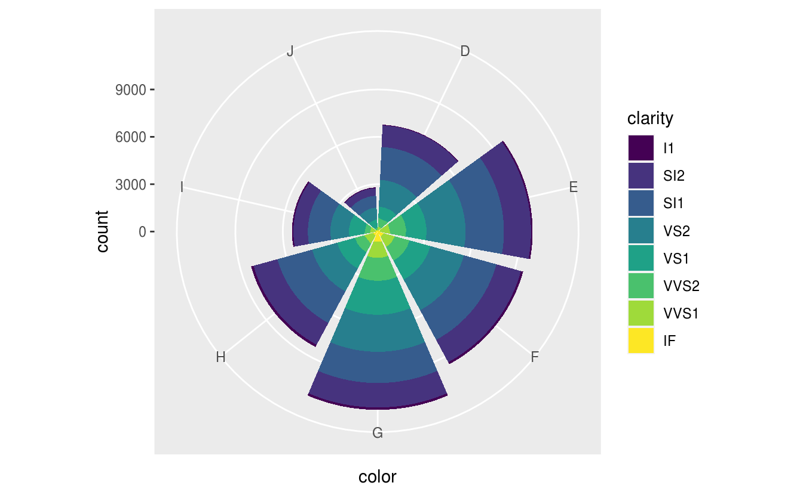
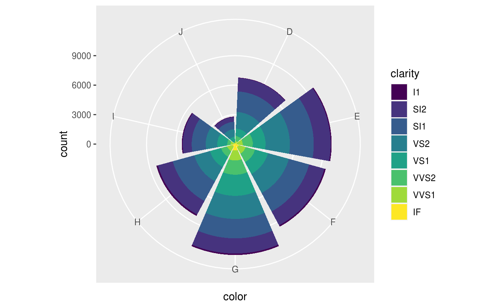
图 9.37: 堆积条形图转风玫瑰图
# 风玫瑰图 http://blog.csdn.net/Bone_ACE/article/details/47624987
set.seed(2018)
# 随机生成100次风向，并汇集到16个区间内
direction <- cut_interval(runif(100, 0, 360), n = 16)
# 随机生成100次风速，并划分成4种强度
mag <- cut_interval(rgamma(100, 15), 4)
dat <- data.frame(direction = direction, mag = mag)
# 将风向映射到X轴，频数映射到Y轴，风速大小映射到填充色，生成条形图后再转为极坐标形式即可
p <- ggplot(dat, aes(x = direction, y = ..count.., fill = mag))
p + geom_bar(colour = "white") +
coord_polar() +
theme(axis.ticks = element_blank(), axis.text.y = element_blank()) +
labs(x = "", y = "", fill = "Magnitude")
图 9.38: 风玫瑰图
p + geom_bar(position = "fill") +
coord_polar() +
theme(axis.ticks = element_blank(), axis.text.y = element_blank()) +
labs(x = "", y = "", fill = "Magnitude")
9.2.10 词云图
词云 ggwordcloud
9.3 运行环境
xfun::session_info(
packages = c(
"ggplot2", "magrittr", "colorspace",
"nlme", "mgcv", "ggbeeswarm", "ggridges", "hexbin"
)
)
#> R version 3.6.1 (2019-07-05)
#> Platform: x86_64-pc-linux-gnu (64-bit)
#> Running under: Debian GNU/Linux 10 (buster)
#>
#> Locale:
#> LC_CTYPE=en_US.UTF-8 LC_NUMERIC=C
#> LC_TIME=en_US.UTF-8 LC_COLLATE=en_US.UTF-8
#> LC_MONETARY=en_US.UTF-8 LC_MESSAGES=en_US.UTF-8
#> LC_PAPER=en_US.UTF-8 LC_NAME=C
#> LC_ADDRESS=C LC_TELEPHONE=C
#> LC_MEASUREMENT=en_US.UTF-8 LC_IDENTIFICATION=C
#>
#> Package version:
#> assertthat_0.2.1 backports_1.1.4 beeswarm_0.2.3
#> cli_1.1.0 colorspace_1.4-1 crayon_1.3.4
#> digest_0.6.20 ellipsis_0.2.0.1 fansi_0.4.0
#> ggbeeswarm_0.6.0 ggplot2_3.2.0 ggridges_0.5.1
#> glue_1.3.1 graphics_3.6.1 grDevices_3.6.1
#> grid_3.6.1 gtable_0.3.0 hexbin_1.27.3
#> labeling_0.3 lattice_0.20.38 lazyeval_0.2.2
#> magrittr_1.5 MASS_7.3.51.4 Matrix_1.2.17
#> methods_3.6.1 mgcv_1.8.28 munsell_0.5.0
#> nlme_3.1.140 pillar_1.4.2 pkgconfig_2.0.2
#> plyr_1.8.4 R6_2.4.0 RColorBrewer_1.1.2
#> Rcpp_1.0.2 reshape2_1.4.3 rlang_0.4.0
#> scales_1.0.0 splines_3.6.1 stats_3.6.1
#> stringi_1.4.3 stringr_1.4.0 tibble_2.1.3
#> tools_3.6.1 utf8_1.1.4 utils_3.6.1
#> vctrs_0.2.0 vipor_0.4.5 viridisLite_0.3.0
#> withr_2.1.2 zeallot_0.1.0